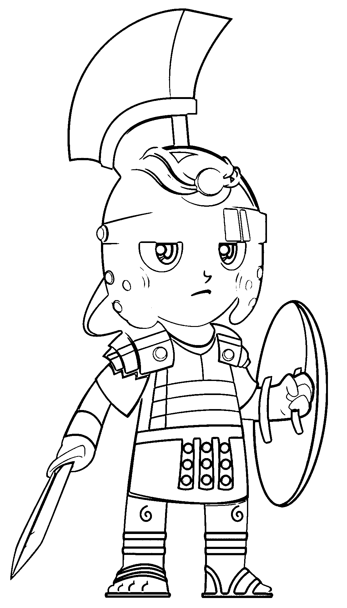

PREFACE
The conditions of Latin teaching have changed much in the
last fifteen or twenty years. Once the subject was rigidly
required, and too often the requirement was ruthlessly administered,
without regard for the difficulties encountered by the
student, and without any particular care to enlist his interest.
Now the gradual shift to an elective basis necessitates certain
adjustments.
It has long been recognized that the transition from the
conventional beginners' book to Caesar is too abrupt; and there
has been more or less agitation for an extension of "beginning
Latin" to the end of the third half-year, thus making room for
a considerable amount of graded reading before the first Latin
author is seriously taken up. Happily this reform seems at
length in a fair way to be realized, as indicated by the recent
action of the College Entrance Examination Board. It is
hoped that the change will result in a large decrease in the
excessive mortality that used to mark the end of the first year's
work.
Long experience has led the writer to believe that, at the
beginning of the third year, there is need of a somewhat similar
change of procedure; for it is likely that Cicero will long
continue to be the outstanding feature of the reading of that
year, and the transition from Caesar is by no means an easy
one.
The student who passes directly from one author to the
other is confronted simultaneously by three difficulties: (1) an
unfamiliar vocabulary, (2) long and complicated sentence
structure, and (3) thought and content rather remote from
his own experience and very hard to grasp when the reading
progresses at the rate of a few lines a day.
In other fields victory has often been won by dividing the
difficulties to be overcome; and it is suggested that this successful
policy be applied here by concentrating upon a single problem
at the start, leaving the others for later treatment.
In pursuance of this plan, the present volume, which is
designed primarily for use in the first half of the third year,
concerns itself chiefly with the matter of vocabulary. Complexity
of sentence structure is everywhere avoided, the thought
is simple and directly expressed, and the units are so short
that the pupil may hope to accomplish something definite at
one sitting.
Casual inspection will doubtless leave the impression that
the vocabulary of the book is rather extensive. This is a
necessary consequence of the variety of the selections; for the
chaffing of slaves, the story of Atalanta's race, and a description
of the eruption of Vesuvius each calls for different phraseology.
However, about a third of the vocabulary of the volume
is made up of words that occur but once; and, with the exception
of proper names, these words are given in the footnotes
on the page with the text, and they do not appear in the general
vocabulary. The latter will be found to be of the same general
range and character as in most third-year books, and perhaps
even more compact than some.
Here, too, as with other word lists, the student will be much
helped by a little previous drill on the meanings of the common
prefixes. Indeed, such a background virtually reduces
the number of words to be learned; for example, given the verb
dūcō, a properly trained pupil should have little need for
recourse to the general vocabulary for addūcō, dēdūcō, indūcō,
prōdūcō, redūcō, and the like.
If the first semester of the third year is thus devoted chiefly
to the task of becoming familiar with the new vocabulary,
the facility so gained will do much to rob of their terrors the
difficulties postponed to the following term. The conven
tional practice of attempting everything at once is very discouraging;
and it may well be that this policy has helped
to foster the much-to-be-regretted tendency to drop Latin at
the end of the second year.
In combating this tendency, no third-year book can afford
to neglect the element of interest. At this point, too, the
conventional program labors under a heavy handicap. Where
classes are large and equipment adequate, some enthusiasm
may be aroused by such expedients as organizing a "Roman
Senate," or the like; but this at best is costly in time and effort,
and it is beyond the reach of most schools.
It is a real misfortune that no classical author has bequeathed
to us a volume written for the instruction and entertainment
of a youthful audience; but scattered here and there through
Latin literature is an abundance of material suited to such a
purpose; and it has been the task of the writer to bring some
of this together and to adapt it to the end in view.
The use of such a compilation can hardly fail to open the
eyes of the pupil to the richness and variety of Latin literature.
Incidentally, a wealth of information is introduced on points
of Roman history; and the thread of a simple story, which
gives unity to the whole, makes it possible to bring in naturally
frequent reference to Roman life and manners.
The narrative follows the fortunes of a family party traveling
by sea from Ephesus to Brundisium, thence northward by
the Appian Way to Rome, then onward to the Alps. As they
journey, the elders narrate to the children interesting facts and
stories suggested by the places visited.
Such a narrative, dealing often with somewhat familiar
subject-matter, provides a context most favorable for quick
apprehension of the meaning of individual words; and the
short sentences, as well as the simplicity of thought and construction,
cannot fail to encourage the habit of attacking Latin
as Latin, and of taking in the thought of a passage in the order
in which it stands. The confidence engendered by such practice
is bound to stand the pupil in good stead, whatever reading
he next takes up.
The short selections of verse interspersed through the text
are chosen for their aptness and without regard to their difficulty.
In a volume that aims to give some idea of the extent
and character of Latin literature, the appropriateness of including
brief specimens of verse is obvious. To forestall a possible
difficulty in handling these, and to help to an appreciation of
the spirit of the lines, a metrical version or paraphrase has in
many cases been provided in the Appendix.
For the most effective use of the book, the class should
have access to the works of reference naturally found in a
high-school library, such as a history of Rome, a Dictionary
of Classical Antiquities, and Johnston's Private Life of the
Romans.
At this time, when the point is being pressed home that,
if Latin is to continue to hold an honored place in secondary
education, the cultural element in its study must be emphasized,
there should be an abundant welcome for a book like
the present in the third year of the course; especially as the
matriculation requirements are now being so liberalized as to
give the teacher a very wide range of choice in reading matter.
If not adopted as a regular text, the book may be used for
sight reading, from the third year onward. For this purpose
the notes at the foot of the page will be found convenient.
The difficulty of the Latin is about the same throughout,
making it possible to select such parts of the story as individual
taste may dictate.
It is no new idea, of course, to enrich the reading program
of the third year by including material lying outside the six
orations of Cicero conventionally read. For example, considerable
use of the letters has been made in this connection,
a plan that has not always worked well, because the
search for extracts easy to read has led too often to the choice
of the pitiable and unmanly messages penned by Cicero during
the time of his exile. At the other extreme, it has recently
been proposed to supplement Cicero's orations by a random
selection from a variety of sources, including such a work as
Dē Fīnibus, which is difficult reading even for college seniors.
The present text avoids these rocks and shoals. And the
hope is entertained that this new method of approach may
bring help and encouragement to many teachers, who are
waging a hard fight to save third- and fourth-year Latin, by
opening up a vista of attractive reading that will lure on more
students into the work of the third year and give them some
conception of the richness and variety of Latin literature.
For assistance in bringing out this volume, special thanks
are due Professors Katherine Allen and Grant Showerman, of
the University of Wisconsin, Professor Charles E. Bennett,
of Amherst College, Professor Dwight N. Robinson, of Ohio
Wesleyan University, Dr. Robert S. Rogers, of Princeton
University, and Professor Harry F. Scott, of Ohio University,
all of whom have contributed generously to the illustration
of the text.
Other help has been given by Mr. Bernard M. Allen, Professor
William F. Badè, of the Pacific School of Religion, and
Miss Florence H. Robinson, of Berkeley; and the publishers
have spared no pains to provide a suitable and attractive
dress for this new venture in the field of Latin bookmaking.
H. C. N.
University of California
March 15, 1927
EXPLANATORY NOTE
The party journeying from Ephesus to Brundisium, and thence to
northern Italy, is headed by a certain Publius Cornelius, a Roman
official stationed for some time in Asia Minor, but on the death of
Hadrian (138 A.D.) recalled to Rome, not knowing to what field of
activity he is to be assigned under the new emperor, Antoninus Pius.
Other members of the party are:
Drusilla, wife of Cornelius
Publius, eldest son, aged sixteen
Sextus, younger son, aged twelve
Cornelia, daughter, aged ten
Lucius, infant son
Onesimus, a slave of mature years, steward and business
manager
Stasimus, a young and pampered slave, who has recently
joined the family in Asia Minor
Anna, a maid from Palestine, special attendant upon Lucius
QUŌ MODŌ VIĀTŌRĒS EX ASIĀ IN ĪTALIAM ET AD ALPĒS ITER FĒCĒRUNT
AD ALPĒS
CAPUT I
Nāvis iam per undās celeriter prōgrediēbātur, omnēsque ē
puppi lītus lēniter ē cōnspectū recēdēns cōnspiciēbant. Ac
postrēmō Drūsilla: "Quīnque iam sunt annī," inquit, "cum in
hanc terram barbaram iter fēcimus. Quam gaudeō nōbīs dēnique
licēre domum revertī, ut tandem patriam et parentēs meōs
vīsāmus!"
Tum Cornēlius: "Rēctē dīcis," inquit. "Sed dum hīc morābāmur,
multa mīranda et iūcunda vīdimus, nec mē paenitet hīs
in locīs longinquīs quīnquennium trānsēgisse. Sed nunc domī
esse maximē cupiō, ut Pūblius noster et Sextus omnia discant,
quae cīvibus Rōmānīs nōta esse dēbent. Et ego ipse forum
templaque deōrum libentissimē iterum aspiciam."
"Urbem vix reminīscī possum," inquit Cornēlia; "tam eram
parvula, cum hūc profectī sumus." Tum subitō conversa ad
Lūcium, quem in gremiō Anna sagō contēctum tenēbat: "Et
Lūcius noster eam omnīnō numquam aspexit." Quae cum
dīxisset, frātrem parvum artē amplexa est.
"Suādeō, uxor," inquit Cornēlius, "ut cum cēterīs tū nunc
in cameram redeās; nam ventus incrēbrēscit. Sed ego et fīliī
paulō diūtius in puppī ambulābimus."
Cum Drūsilla in cameram cum līberīs servīsque sē recēpisset,
tum Pūblius, dum ultrō citrōque ambulant, patrī: "Videor mihi
recordārī," inquit, "quondam perīculōsum fuisse in marī Aegaeō
nāvigāre propter pīrātās, quī ubique castella habērent, unde in
nāvēs mercātōrum impetūs facerent subitōs."
"Per multōs annōs rēs ita sē habēbat," inquit Cornelius;
"et mercātōrēs hōc modō saepe periērunt, nāvēsque eōrum aut
incēnsae sunt aut in marī submersae. Quīn etiam pīrātae istī
postrēmō impūnitāte tam audācēs factī sunt, ut nāvīs quoque
adorīrentur, quibus vehēbantur magistrātūs nostrī."
"Papae!" inquit Sextus. "Nōnne nōmen magnum populī
Rōmānī veritī sunt? Cūr nōn nāvēs longae istōs scelestōs statim
ē marī fugāvērunt?"
"Saepe id temptātum est," inquit pater; "sed, ut est in
vetere prōverbiō, 'Incipere multō est quam impetrāre facilius.'
Quō modō factum est ut, cum aliōs nāvēs cōnsectārentur, aliī
procul praedās agerent; nec fīnis fuit, priusquam custōdia
tōtīus ōrae maritimae Gnaeō Pompeiō Magnō commissa est. Is
tam ācriter pīrātās lacessīvit, ut omnēs sexāgintā diēbus aut
fugerent aut lēgātōs pācis petendae causā ad eum mittere
cōgerentur."
Tum Pūblius: "Nōnne Caesar dictātor in potestātem istōrum
pīrātārum ōlim ipse pervēnit?"
"Rēctē quaeris," inquit Cornēlius. "Nam ille adhūc iuvenis
īnsulam Rhodum adīre volēbat, ut Apollōnium Molōnem
clārissimum dīcendī magistrum ibi audiret. Hūc cum hībernīs
mēnsibus trānsīret, ā pīrātīs captus, apud eōs mānsit diēs ferē
quadrāgintā.
"Interim comitēs Rōmam dīmissī sunt pecūniam quaesītum,
quā redimerētur. Ipse, inter hostēs relictus, cum pīrātīs cōmiter
iocātus saepe adfirmāvit sē reversum dē eīs supplicium summum
sūmptūrum.
"Illī scīlicet tum adrīsērunt. Sed Caesar, cum, pecūniā
dēmum adlātā, in lītore dēsertō expositus esset, Mīlētum statim
perrēxit; ubi classe dēductā pīrātās abeuntēs secūtus est, eōsque
omnēs suppliciō eō adfēcit, quod anteā quasi per iocum minātus
erat."
"Quam vellem," inquit Sextus, "pīrātae hodiē quoque in hōc
marī nāvigārent! Sī nostram nāvem adoriantur, ego eīs capita
prius abscīdam, quam in puppim ēscendere possint."
"Heia!" inquit Pūblius, cum sē horrēscere simulāret; "quam
bene pīrātīs accidit Sextum nostrum illīs temporibus maria nōn
nāvigāsse!"
Tum Sextus irā incensus: "Nōlī tē iactāre, Pūblī; nam etsī
maior nātū es, ego tamen sum fortior."
"Agite, filiī meī," inquit Cornēlius. "Inter vōs dēsinite
altercārī. Tales dissēnsiōnes indecōrae sunt; et exīstimō iam
Onēsimum cūrāsse ut esset quod ederēmus. Eāmus intrō."
Quae cum dīxisset, ad cameram pedem convertit; ac Pūblius
et Sextus, quī male ēsuriēbant, libenter subsecūtī sunt.
CAPUT II
Illā nāve vehēbantur hominēs plūrimī; sed diēs complūrēs
tam asperum erat mare, ut plērīque graviter nauseā adficerentur,
paucīque in puppī ambulāre possent. Mīrus et molestissimus
est hic morbus; quī enim eō adficitur, prīmō timet nē moriātur,
tum metuit nē in vītā retineātur.
Postrēmō autem omnibus melius est factum, rārīque in
puppim prōdiērunt. In eīs erat senex quīdam, quī linguā
barbarā ūtēbātur, nec quisquam plānē intellegere poterat quid
ille dīcere vellet.
Dēnique mercātor dīves, quī frūstrā cum sene loquī cōnātus
erat: "Nōnne hīc adest quisquam," inquit, "cui lingua huius
peregrīnī nōta sit?"
Forte Stasimus haud procul stābat. Quī cum haec audīvisset,
ut erat vafer, "Mihi," inquit, "omnēs linguae nōtae sunt. Si
exposueris quid rogāre velīs, ego libenter cum sene loquar."
Quō dictō, ad senem accessit, et sermō huius modī institūtus est:
Stasimus. Salvē multum, senex.
Senex. Avo. Dōnni.
Mercātor. Quid dīcit, obsecrō?
Stasimus. Dīcit sē iubēre tē salvēre, et tibi donum dare velle.
Mercator. Benignē facit. Sed quaere, quis sit homō, aut
unde veniat.
Senex. Mē har bocca.
Stasimus. Dīcit buccam dolōre.
Mercātor. Fortasse nōs esse medicōs putat. Quaere, sīs;
nam hospitem sīc errāre nōlō.
Senex. Murph ursa mvulc.
Mercātor. Quid nunc dīcit?
Stasimus. Dīcit sē ursās vēndere velle.
Mercātor. Forsitan bēstiās comparet in amphitheātrō exhibendās.
Senex. Pālu mer ged etha.
Stasimus. Dīcit sē pālās quoque vSndere.
Mercātor. Ad terram effodiendam, crēdō. Sed vix intellegere
possum cūr negōtia tam dīversa cōnfundat.
Senex. Murphonnium sucorhim.
Mercātor. Quid dīcit, obsecrō?
Stasimus. Tē iubet sub corbulam rēpere.
Mercātor. Papae! Dēlīrat profectō.
Cum hic sermō habērētur, Pūblius et Sextus prope stābant,
vix sē continentēs quōminus in cachinnōs ērumperent. Sed iam
ē camerā prōcessit Cornēlius; et Stasimus celeriter in puppim
extrēmam sē recēpit. Quō factō, Cornēliō mercātor: "Estne,"
inquit, "ille Stasimus servus tuus?"
"Ita," inquit Cornēlius; "nec usquam est puer scelestior."
"Haud ita mihi vidētur," inquit mercātor; "nam modo
mihi operam benignē dedit, cum hunc peregrīnum quaedam
rogāre vellem."
"Quō modō, obsecrō, ille tē adiuvāre potuit?" inquit
Cornēlius. "Multīs linguīs ego ūtor; sed nē ego quidem paulō
ante intellegere poteram quid hic ignōtus dīcere vellet, cum mē
appellāret. Stasimus autem nihil nisi Latīnē scit."
"Suspicor igitur eum mē lūdificāsse," inquit mercātor
rīdēns. "Sed sine dubiō omnia per iocum fēcit; ac spērō dō eō
supplicium tē nōn sūmptūrum."
Tum Cornēlius: "Dolīs eius interdum īrā tantopere incendor,
ut vix mē continēre possim quōminus eum in crucem statim
agam. Cum autem tū tam clēmenter suādeās, poenās nōn dabit
—dōnec aliam noxiam commeruerit."
Dum illī ita inter sē loquuntur, peregrīnus, ā spē omnī
dēstitūtus, caput quassāns trīstis discessit; atque interim
Pūblius et Sextus ad prōram prōcesserant, ubi flūctūs magnōs
admīrantēs diū stābant.
Tum Sextus: "Hīsne in regiōnibus," inquit, "pugna nāvālis
umquam commissa est?"
"Ōlim," inquit Pūblius, "in marī Pamphȳliō Hannibal cum
Rhodiōrum classe cōnflīxit. Sed multō est mīrābilior pugna,
quā Eumenem, rēgem Pergamēnum, Poenus īdem fugavit."
"Dē hāc numquam audīvī," inquit Sextus. "Quid factum
est, obsecrō?"
Tum Pūblius: "Modo librum Cornēlī Nepōtis legēbam, quī
rem gestam ita trādit: Hannibal nāvium numerō superābātur;
itaque dolō eī pugnandum erat. Quārē suōs iussit venēnātās
serpentēs vīvās quam plūrimās colligere, eāsque in vāsa fictilia
conicere. Cum diēs pugnae vēnisset, imperāvit ut omnēs in
Eumenis ipsīus concurrerent nāvem, cēterās autem neglegerent.
"Quod ubi factum est, nāvis Eumenis fugā salūtem petere
coācta est, sed cēterae undique classem Hannibalis vehementer
premēbant. Tum in eās repente vāsa fictilia, dē quibus suprā
mentiōnem fēcī, coniecta sunt. Quibus in puppēs frāctīs, nāvēs
hostium brevī serpentium plēnae erant; atque illī, novā rē
territī, terga vertērunt rēgemque Eumenem intrā praesidia, quae
in proximo lītore collocāta erant, celeriter subsecūtī sunt."
"Hahahae!" inquit Sextus. "Hannibal certē dux callidus
erat. Vix turpe fuit ā tantō imperātōre vincī."
Tum Pūblius, post sē respiciēns: "Putō," inquit, "nōs nunc
redīre posse. Stasimus poenās effūgisse vidētur, neque usquam
hospes in cōnspectū est."
Itaque ā prōrā cum recessissent, sē patrī cēterīsque reddidērunt,
quī iam passim in puppī sedēbant.

CAPUT III
Posterō diē nautae procul terram aspexērunt, omnēsque
cupidē ad latus nāvis properāvērunt, quō melius eam vidērent.
Tum Cornēliō Sextus: "Quam terram, pater," inquit, "iam
aspicimus?"
"Crētam eam esse crēdō, mī fīlī," inquit Cornēlius. "Īnsula
est magna, ibique multae rēs mīrābilēs factae esse dīcuntur.
Abī, sorōrī nūntiā ut hūc veniat. Fortasse ego quaedam
reminīscī possum, quae vōs libenter audiātis."
"Euax!" inquit Sextus. "Abeō." Et celeriter in cameram
sē recēpit, unde brevī cum Cornēliā et quibusdam līberīs aliīs
ēgressus est.
"Quantō plūrēs, tantō melius," inquit Cornēlius rīdēns.
"Hūc accēdite, līberī; in vēlī umbrā sedeāmus, dum vōbīs
fābulam nārrō." Tum, cum omnēs ad audiendum compositī et
intentī essent, ita loquī incipit:
"Multōs abhinc annōs Crētā Athēnās vēnit Androgeōs,
Mīnōis fīlius, ut ibi dēscenderet in certāmina, quae Panathēnāica
vocantur. Ubique victor erat. Quārē Aegeus, rēx
Athēniēnsium, invidiā commōtus, iuvenī negōtium dedit, ut
taurum Marathōnium occīderet, hōc modō ratus sē hospitem
ingrātum facile sublātūrum. Neque haec rēs eum fefellit; nam
iuvenis ā mōnstrō ipse dīlaniātus est.
"Ubi haec Crētam sunt dēlāta, Mīnōs dolēns et irā commōtus
magnum exercitum in fīnēs Athēniēnsium dūxit, eōrumque
urbem obsēdit; ac paulō post pestis quoque tam dīra incidit in
eōs, ut condiciōnēs pācis petere cōgerentur. Quās acerbissimās
accēpērunt; nam Mīnōs postulāvit ut quotannīs septem puerī
nōbilēs totidemque puellae Crētam mitterentur, ubi dīlaniārentur
ā mōnstrō quōdam, quod ipse domī alēbat. Eī mōnstrō erat
nōmen Mīnōtaurus, quia taurī caput sed corpus hūmānum
habēbat."
"Horrēscō audiēns," inquit Cornēlia, cum ad patrem propius
accēderet; "quam gaudeō tālia mōnstra hīs temporibus nusquam
reperīrī!"
"Mihi autem," inquit Sextus, "maximō dolōrī est omnia
ista iam occīsa esse; complūra occīdere pervelim."
At Cornēlius: "Nōnne oblītus es, mī fīlī, mē fābulam nārrāre?"
"Peccāvī, pater," inquit Sextus. "Veniam dā, obsecrō.
Posteā nihil interpellābō."
Tum Cornēlius: "Mīnōtaurus in labyrinthō latēbat, ubi
vorābat adulēscentēs miserōs, quī multiplicibus errōribus impedītī
numquam exitum invenīre poterant, cum semel eō intrōductī
erant.
"Per multōs annōs Athēniēnsēs illud tribūtum horrendum
solverant, cum Thēseus, rēgis Athēniēnsis fīlius, postulāvit ut
sibi licēret esse ē numerō iuvenum, quī illō annō Crētam
mitterentur. Pater scīlicet fīlium tantō perīculō obicere nōluit.
Thēseus autem obstinātā mente in sententiā persevērāvit,
rēxque postrēmō concēdere coāctus est.
"Vēla nāvis, quā adulēscentēs īnfēlīcēs vehēbantur, semper
sordida erant, quod illī miserī quasi ad fūnus abībant. Sed iam
Aegeus imperāvit candida quoque comparārī, fīliōque praecēpit
ut, sī omnia prōsperē cessissent, domum rediēns sordida vēla
illīs candidīs mūtāret, quō signō procul omnibus nōtum foret
Mīnōtaurum occīsum esse.
"Lēnī ventō vectus Thēseus Crētam pervēnit; ubi Ariadna,
Mīnōis fīlia, amōre hospitis statim incēnsa est. Gladium igitur
eī dedit et fīlum, quō vēstīgia regeret, cum ē labyrinthō exīre
cōnārētur. Quō modō Thēseus, mōnstrō occīsō, incolumis
ē locō horrendō sē recēpit. Tum cum Adriadnā clam fūgit
ex urbe, et eādem nāve domum profectus est."
"Spērō," inquit Cornēlia, "eōs salvōs Athēnās pervēnisse.
Sine dubiō cīvēs Ariadnae grātiam maximam rettulērunt, quod
Thēseum tam callidē adiūverat."
Tum Cornēlius: "Ariadna numquam Athēnās vīdit. Nam
Thēseus eam quādam in īnsulā relīquit, cum domum iter
faceret."
"Rem quam foedam!" inquit Cornēlia. "Spērō eum prō
perfidiā tantā poenās maximās dedisse."
"Ille vērō erat satis īnfēlīx," inquit pater; "nam oblītus
est signum dare, quō patrī ostenderet omnia prōsperē cessisse.
Itaque cum nāvis iuvenēs gaudentēs in portum veheret, Aegeus,
ē scopulīs prōspiciēns, sordida vēla procul vīdit. Quārē ratus
fīlium mortuum esse, ē vertice scopulōrum sē praecipitāvit ac
corpus in saxa ēlīsum est. Ita accidit ut Thēseus tantum ad
fūnus patris cūrandum domum pervenīret."
Postquam haec dicta sunt, omnēs aliquamdiū tacitī sēdērunt,
cum aspicerent terram, quae usque propius accēdere vidēbātur.
Tum Pūblius ē camerā prōdiit, et ille: "Gaudeō," inquit, "nōs
Crētam tam plānē vidēre posse. Semper enim voluī aspicere
hanc terram, quō Hannibal exsul ōlim dēvertit."
"Sed mihi nunc abeundum est," inquit Cornēlius. "Tū
autem, Pūblī, in librō Cornēlī Nepōtis profectō lēgisti, quō
modō Hannibal incolās istīus īnsulae ēlūserit. Certō sciō hōs
līberōs id audiīre velle."
Tum Cornēlia: "Nārrā, sīs, frāter. Nōs omnēs ad audiendum
compositī sumus."
"Fābula haud longa est," inquit Pūblius. "Postquam
Poenī Zamae dēvictī sunt, aliquamdiū Hannibal in Āfrica
mānsit, et multīs modīs patriam suam adiūvit. Postrēmō
autem Rōmā lēgātī Carthāginem vēnērunt. Eōs suī poscendī
causā missōs ratus, Hannibal nāvem cōnscendit atque in Syriam
ad rēgem Antiochum sē contulit; cui persuāsit ut bellum
Rōmānīs īnferret.
"Antiochō victō, veritus nē Rōmānīs dēderētur, Crētam
Poenus fūgit. Sēcum pecūniam grandem portābat; quam nē
raperent Crētēnsēs, cōnsilium tāle iniit: Amphorās aliquot
complēvit plumbō, summās autem aurō et argentō operuit.
Hās, praesentibus magistrātibus, in templō Diānae collocāvit,
cum simulāret sē fortūnās suās ibi custōdiendās relinquere. Interim
quāsdam statuās cavās pecūniā suā complēverat, eāsque
domī summā neglegentiā servābat, quasi nihilī essent.
"Crētēnsēs, sīc in errōrem inductī, templum magnā cūrā
custōdiēbant, nē Hannibal cum suā pecūniā clam abīret. Ille
autem, occāsiōne oblātā, statuās in nāvem imposuit, et, fortūnis
ita cōnservātīs, in Pontum incolumis pervēnit."
"Quantō plūra dē Hannibale audiō," inquit Sextus, "tantō
magis eius sollertiam admīror. Minimē mīrum est eum totiēns
imperātōrēs nostrōs superāsse. Sed nunc mē exercēre paulisper
iussus sum." Quae cum dīxisset, surrēxit, omnēsque aliī in
aliam partem discessērunt.
CAPUT IV
Circiter merīdiem Cornēlius, cum quaedam Onēsimō dictāvisset,
in puppī cum fīliīs ultrō citrōque ambulābat. Iam propter
nebulās īnsula Crēta vix cernī poterat, et Sextus: "Quō modō
fit, pater," inquit, "ut tantō circuitū in Ītaliam iter faciāmus?
Nōnne est ūlla via brevior, quā ad fīnem dēstinātum perveniāmus?"
"Aliquantō brevior est via," inquit pater, "sī terrestrī
itinere per Achaiam pergere velīs. Et semel et iterum initum
est cōnsilium Isthmī perfodiendī, ut eā ex Aegaeō in Īōnium
mare nāvēs trānsīre possent. Dictātor Caesar hoc opus prīmus
cōgitāvit. Deinde Caligula ad loca dīmētienda centuriōnem
mīsit. Postrēmō Nerō rē vērā initium fēcit; quīn etiam ipse
rāstrō humum prīmus effōdit et corbulae congestam umerīs
extulit. Sed adhūc incohātum modo opus est."
Dum Cornēlius ita loquitur, in puppim prōdiērunt et
mercātor, dē quō ante mentiōnem fēcimus, et peregrīnus īnfēlīx,
cuius lingua nēmini nōta erat. Quōs cum aspexisset, mercātōrī
Cornēlius: "Illīus īnfēlīcis mē vehementer miseret," inquit.
"Mē quoque eius miseret," inquit mercātor; "et libenter
haec ā tē audiō. Nam bene sciō plērōsque cīvēs nostrōs peregrīnōs
paene omnēs nihilī facere."
Tum Cornēlius rīdēns: "Fābulamne umquam audīvistī dē
peregrīnīs, quī, cum Rōmam pervēnissent, quaerēbant cīvem,
quī pollicitus erat sē eōs rēgiē hospitiō acceptūrum, sī quandō
in Ītaliam iter fēcissent?"
"Numquam, quod sciam," inquit mercātor. "Nōnne vīs
eam nārrāre?"
"Hic cīvis," inquit Cornēlius, "ōlim ōtiōsus in forō ambulābat,
cum subitō occurrērunt duo hospitēs, quōs splendidē
invītāverat, cum ipse peregrīnārētur. Quā rē homō prīmō
conturbātus est; nam vērō eī erat domus parva et rēs familiāris
tenuis.
"Tum autem, callidē trepidātiōnem suam dissimulāns:
'Gaudeō,' inquit, 'vōs salvōs advēnisse; sed fēcissētis rēctius, sī
statim ad mē vēnissētis.' 'Id fēcissēmus,' inquiunt illī, 'sī
domum tuam nōvissēmus.' 'Hoc quidem perfacile est,' inquit
homō; 'omnēs enim dēmōnstrāre possunt aedēs, ubi habitō.
Sed īte mēcum.'
"Sequuntur illī, cum intereā eius sermō omnis in ostentātiōne
cōnsūmitur: in agrīs quaerit frūmenta quō modō prōveniant,
quasi omnia sua sint; queritur quod vīlla sua nūper incēnsa sit.
"Interim, dum tālia loquitur, forte animadvertit aedēs
cuiusdam civis locuplētis, ubi convīvae multī exspectābantur;
cumque iānitōrī nōtus esset, hospitēs intrōdūxit, quibus: 'Hic,'
inquit, 'habitō.' Interim īnspicit argentum, quod erat expositum,
triclīnium vīsit, omnia probat.
"Brevī autem accessit servus, quī hominī clārē dīxit
dominum iam ventūrum, sī exīre vellent. 'Itane?' inquit ille.
Tum hospitibus: 'Nunc eāmus; frāter enim ex Siciliā vēnit.
Ego eī obviam eō; vōs autem hūc decimā hōrā redīte.'
"Hospitēs nihil suspicantēs discessērunt, homō vērō celeriter
domum sē contulit. Hōrā cōnstitūtā ad aedēs cīvis locuplētis
rediērunt peregrīnī; unde dērīsī in dēversōrium rūrsus sē
recipere coācti sunt.
"Postrīdiē in forō hominem vīdērunt, eumque incūsāvērunt.
Ille autem dīxit eōs similitūdine aedium dēceptōs esse, sēque
domī multam ad noctem exspectāsse.
"Interim servō suō imperāverat ut ā vīcīnō vāsa, vestīmenta,
et eius modī alia ūtenda rogāret. Quae cum comparāta esse
eo putāret, hospitēs domum dēdūxit, cum simulāret sē maiōrēs
aedēs suās amicō cuidam ad nūptiās commodāsse.
"Dum ibi cēnant, subitō puer nūntiat argentum repetī;
nam sollicitus factus erat is, quī id commodāverat. 'Apage!'
inquit cīvis noster ēgregius; 'aedēs commodāvī, familiam dedī,
Argentum quoque vult? Etsī hospitēs habeō, tamen id quoque
commodābo; nōs interim Samiīs dēlectābimur.'"
"Hahahae!" inquit mercātor. "Spērō hospitēs miserōs
cēnam saltem gustāsse, priusquam ea quoque auferrētur."
"Nihil amplius adeptī sunt," inquit Cornēlius; "et iūre
exīstimāvērunt sēcum male āctum esse."
At alter: "Hīs audītīs etiam magis mē omnium peregrīnōrum
īnfēlīcium miseret. Et maximē doleō exīstimātiōnem
populī Rōmānī pendēre cōgī tālibus ex cīvibus, quālem tū modo
dīcēbās." Quae cum dīxisset, in sōle cōnsēdit; Cornēlius autem
cum fīliīs ambulāre persevērāvit, dōnec accessit Cornēlia, quae:
"Exīstimō," inquit, "mē avēs quāsdam volantēs procul cernere.
Eāsne vidēs, Sexte?"
"Paucās cernere mihi videor," inquit Sextus. "Ex altō
in īnsulam refugere videntur. Fortasse tempestātem coorīrī
sentiunt."
"Quod ōmen dī āvertant!" inquit Cornēlius. "Nam brevī
in marī maximō versābimur. Sī nūbēs ātrae in caelō tum
cōgentur, nec sōlem nec lūnam aut stellās vidēre poterimus, nec
gubernātor sciet quō nāvem dīrigat."
"Saepe dē avibus scrīptōrēs nostrī mentiōnem faciunt,"
inquit Pūblius. "Nōnne sunt quī putent eārum volātū rēs
futūrās portendī?"
"Maximē vērō," inquit pater. "Et profectō tū saepe audīvistī
dē pullīs, quōs eī cōnsulunt, quī perīcula sunt aditūrī."
"Haec mihi nārrā, sīs," inquit Cornēlia; "ego enim numquam
audīvī."
"Pullī illī," inquit Cornēlius, "in caveīs custōdiuntur. Cum
perīculum adest, ēdūcuntur, cibusque eīs obicitur. Sī edere
nōlunt, trīste ōmen; sīn autem vorant tam cupidē ut aliquid ē
rōstrīs excutiātur, id est ōmen optimum."
At Cornēlia: "Estne vērō ēventus semper tālis, quālem pullī
portendunt?"
"Vix id audeō dīcere," inquit pater. "Etsī ōlim bellō
Pūnicō prīmō populī Rōmānī dētrīmentō magnō nōnnūllīs
vidētur plānum factum esse haud impūne tālia portenta
neglegī.
"Nam P. Claudius pullōs, quī caveā līberātī edere nōllent,
in marī mergī iussit, cum dīceret eīs bibendum saltem esse,
etiam sī edere nōllent. Cuius temeritātem deī graviter ulcīscī
vidēbantur, cum classis eius ad pugnam profecta clāde maximā
vincerētur."
"Homō quam impius erat ille Claudius!" inquit Cornēlia.
"Certē dignus erat, quī poenās maximās solveret."
"Ille vērō," inquit pater, "ā populō condemnātus est; et
eius collēga, L. Iūnius, quī alibī nōn pāruerat auspiciīs classemque
tempestāte āmīserat, sē ipse interfēcit."
Dum haec dīcuntur, Drūsilla et Anna cum Lūciō ē camerā
prōdiērunt; quō vīsō, gaudiō exsiluērunt līberī, quī cum frātre
parvulō lūdere iam diū cupiēbant.
CAPUT V
Lūcius autem iam patrem aspexerat, manūsque statim ad
eum tendēbat. Tum: "Quam bellus est ille parvulus," inquit
mercātor. "Quem cum videō, admoneor dē versibus illīs lepidīs
poētae Catullī:
"'Torquātus volŏ parvulus
Mātris ē gremiō suae
Porrigēns tenerās manus
Dulce rīdeat ad patrem
Sēmihiante labellō.'"
"Scīsne," inquit Sextus, "Pūblium quoque nostrum esse
poētam? Versūs lepidōs paene cotīdiē facit."
Quō audītō, Pūblius ērubuit, et: "Tacē, sis, Sexte," inquit.
"Nōnne tē pudet tam stultē loquī?"
"Quīn herī," inquit Sextus, "tē in umbrā vēlī sedentem
vīdī, cum aliquid summā cūrā cōnficerēs."
"Age, fīlī mī," inquit Cornēlius rīdēns; "verēcundārī nōn
tē decet. Audiāmus quae scrīpserīs."
Tālī cohortātiōne inductus, Publius chartam haud invītus
prōtulit, et: "Abhinc paucōs diēs," inquit, "Annam audīvī,
cum vesperī lēniter caneret, quō facilius Lūcius obdormīret.
"Canēbat dē labōribus[1] cīvium suōrum, quī domō expulsī
Babylōnem in exsilium dēductī sunt. Dulcissimus erat ille
cantus, sed etiam maestissimus; cum[2] autem Anna suā linguā
ūterētur, vix intellegere potuī quid esset, dē quō dīceret. Sed
paulō post mē omnia docuit[3]; ac verbōrum sententiam ego nostrīs
modīs exprimere sīc cōnātus sum:
"Sedēmus amnīs ad[4] Babylōniōs,
Nostrōrum amārīs[5] fūnera lacrimīs,
Sīōne victā, conquerentēs[6]
Exsiliīque gravīs labōrēs.
"Iam victor atrōx increpitāns[7] iocō,
'Sīōnis,' inquit, 'laetificīs[8] modīs
Cantāte laudēs. Cūr sedētis
Cōnsimilēs[9] ovibus[10] tacentēs?'
"'Hīc ut canāmus[11] nōs patrium deum
Maestī exsulantēs, barbaricā[12] in domō[13]?
Sīōn[14], male hostēs sīc cadant[15] ut[16]
Tē cinerēsque tuōs verēbor.'"
"Euge" inquit mercātor; "mihi quidem hī versūs optimī
esse videntur. Sī fēlīciter fēceris prōgressum[17], aliquandō poēta
vērus esse poteris."
At nunc Drūsilla līberīs: "Fortasse vōbīs Anna quoque
1. labōribus, trials.
2. cum: causal.
3. docuit: with acc. of person and thing.
4. ad, beside.
5. amārus, -a, -urn, adj., bitter.
6. conqueror, -querī, -questus sum, tr., lament.
7. increpitō, -āre, tr., challenge.
8. laetificus, -a, -um, adj., joyous.
9. cōnsimilis, -e, adj., like.
10. ovibus: dat.
11. ut canāmus, we sing? (rejecting the suggestion).
12. barbaricus, -a, -um, adj., foreign, strange.
13. domō, freely, land.
14. Sīōn: voc.
15. cadant: a wish,
16. ut, as.
17. prōgressus, -ūs, m., progress.
aliquid nārrābit. Eam rogāte." (Anna enim cum Lūciō interim
discesserat, iamque haud procul sedēbat.)
Eia, cum cognōvisset quid līberī vellent: "Multa," inquit,
"sunt clāra facta virōrum gentis meae; diēsque me dēficiat, sī
vōbīs omnia nārrāre cōner. Audīvistisne umquam dē homine
omnium validissimō?"
"Herculem, ut opīnor, dīcis," inquit Sextus. "Nam ferunt
eum omnēs vīribus superāsse."
"Herculem nōn dīcō," inquit Anna, "sed Samsōnem, quī
manibus ipsīs leōnem dīlaniāvit."
"Idem fēcit Herculēs quoque," inquit Sextus; "nam cum
leōnem Nemeaeum nec clāvā nec sagittīs vincere potuisset,
manibiis ipsīs mōnstrum occīdit."
"Sed omnia nōndum dīxī," inquit Anna. "Samsōn, cum
in quādam urbe hostēs eum obsidērent, clam noctū ex oppidō
ēgressus, postēs portae umerīs abstulit."
"Eugepae!" inquit Sextus. "Vix crēdō Herculem ipsum
id facere potuisse."
At Anna: "Postrēmō hostēs certiōrēs factī sunt vīrēs
Samsōnis in capillō sitās esse; dolōque eum aggressī, capillō
prīvāvērunt. Tum ille facile in eōrum potestātem pervēnit;
quem, cum oculōs ēripuissent, in pīstrīnum dēdūxērunt, ubi in
tenebrīs molam versāre coāctus est."
"Ēheu," inquit Cornēlia; "quam mē istīus īnfēlīcis miseret!"
"Ipse sē pulchrē ultus est," inquit Anna. "Nam ōlim, cum
quaedam fēriae habērentur et multitūdō maxima convēnisset,
puerum ōrāvit ut manūs suās in columnās templī impōneret
(nam ipse iam caecus erat). Quō factō, Samsōn, cui capillus
interim rūrsus prōmittēbātur, omnibus vīribus cōnīsus columnās
disiēcit, et ruīnā templī hostēs plūrimōs sēcum oppressit."
"Haec est fābula adprīmē lepida," inquit Sextus. "Potesne
aliquid dē bellātōribus clārīs nārrāre?"
Tum Anna: "Annālēs gentis nostrae exemplīs tālibus abundant.
Longum est etiam pauca nārrāre. Sed ōlim erat pāstor,
quī vixdum iuvenis ingentem occīdit hostem, ā quō nostrī verbīs
contumēliōsīs ad proelium prōvocātī erant."
"Dē istō nārrā, sīs," inquit Sextus. "Audīre cupimus."
At Anna: "Hostis erat gigās, quōcum congredī nēmō audēbat;
quārē omnēs crēdēbant hunc iuvenem dēlīrāre, quī certāmen
tam impār inīre vellet. Accēdēbat ut armīs mīlitāribus ūtī
nescīret; quam ob rem in proelium prōdiit cum fundā tantum
et lapidibus quibusdam lēvibus."
"Āmēns profectō fuit," inquit Sextus, "quī sīc armātus cum
bellātōre ingentī congrederētur."
"Nūllō modō," inquit Anna; "nam ā deō auxilium spērābat,
neque rēs eum fefellit; priusquam enim hostis propius accēdere
posset, lapidem in eius frontem tantā fēlīcitāte impēgit, ut
bellātor ingēns subitō corruēns humī prōnus iacēret. Tum
adulēscēns, gladiō ipsīus arreptō, caput hostis abscīdit sanguineque
cruentum ad rēgem rettulit."
"Vāh!" inquit Cornēlia. "Facta tālia audiēns horrēscō.
Nōnne quidquam laetius narrare potes?"
Tum Anna: "Multa laeta quoque commemorāre possum.
Quīn etiam recordor quaedam dē hōc ipsō pāstōre adulēscente,
quī posteā rēx noster factus est.
"Ōlim, cum bellum cum fīnitimīs gereret, illīque praesidiō
occupāvissent urbem, quae erat ipsīus patria, tum rēx, sitī
obortā, mīlitibus audientibus: 'Utinam,' inquit, 'nunc bibere
possem ē fonte gelidō, quī ad portam patriae est!'
"Quō cognitō, trēs mīlitēs virtūtis maximae, clam ex castrīs
ēgressī, per statiōnēs hostium viā gladiīs factā, ad fontem
pervēnērunt illum; tum, aquā inde celeriter haustā, ad rēgem
incolumēs sē recēpērunt. Quī cum cognōvisset quantō perīculō
aqua illa adlāta esset, bibere nōluit eamque lībāns humī perfūdit."
"Rēgem optimum!" inquit Cornēlia. "Huius modī fābulīs
maximē dēlector."
Sed iam Lūcius, quī diū tacitus sēderat, querellās ēdere
coepit, Annaque eum in cameram ad mātrem dēdūxit. Līberī
interim abiērunt, sī forte Stasimum invenīre possent
CAPUT VI
Paucōs diēs caelō serēnō nāvigāverant, omnēsque gaudēbant,
ratī sine perīculō ūllō iter tōtum cōnficī posse, cum subitō nūbēs
ātrae ē marī orīrī vīsae sunt, quae brevī diem ē cōnspectū
vectōrum ēripuērunt. Terra iam procul aberat, ventīque turbidī
per rudentēs strīdere coepērunt.
Tum nautae vēla contrahere properāvērunt, et omnia quae
ūsuī essent ad vim tempestātis lēniendam parāta sunt. Interim
magister mulierēs ūnā cum līberīs et servīs camerā sē continēre
iussit. Virī autem plērīque in puppī paulisper ambulāre
persevērāvērunt, etsī mox ventōrum vī vestis eōrum paene
discerpēbātur.
Sed brevī illī quoque in locum tūtum libenter sē recēpērunt;
nam in marī iam erat ātra nox, flūctūsque maximī nāvem feriēbant,
omniaque mortem minārī vidēbantur. In camerā sedēbant
mulierēs et līberī pavidī; interdum enim flūctūs tantopere nāvem
quatiēbant, ut vix locō sē tenēre possent.
Pūblius autem, quī nōlēbat quemquam putāre sē esse sollicitum,
librum poētae cuiusdam adsiduē legēbat. Cui postrēmō
pater: "Quem librum," inquit, "tam attentē legis, mī fīlī?"
"Hic est liber lepidus poētae Ovidī," inquit Pūblius. "Dē
naufragiō quōdam optimē scrībit. Audīte quam pulchrī sint
hī versūs." Quō dictō, recitāre coepit:
"'Totidemque videntur,
Quot veniant flūctūs, ruere atque inrumpere mortēs.
Nōn tenet hic lacrimās; stupet hic; vocat ille beātōs,
Fūnera quōs maneant; hic vōtīs nūmen adōrat
Bracchiaque ad caelum, quod nōn videt, irrita tollēns
Poscit opem.'"
Sed iam Drūsilla, quae prae terrōre diū sē vix continēre
potuerat: "Dēsine, obsecrō," inquit, "librumque illum dīrum
omitte. Nōnne vidēs nōs quoque magnō in perīculō esse, et
omnibus fortasse brevī pereundum?"
"Tranquillō es animō," inquit Cornēlius. "Valida est nāvis
nostra, et nautae exercitātī. In saxa latentia nisi in tenebrīs
dēferēmur, omnia tūta sunt." Tum Pūbliō: "Sed, mī fīlī,
cēnseō illud carmen omittendum dōnec omnēs hilariōrēs sint."
"Quam mox in Ītaliam perveniēmus?" inquit Sextus, quī
sub subsellium refūgerat, nē quis scīret sē flēre.
"Aliquamdiū per mare Īōnium iam vectī sumus," inquit
pater, "et spērō haud procul abesse terram Ītalicam."
Vix ea dicta erant, cum clāmor magnus in puppī exortus
est. Quō audītō, Cornēlius et virī aliī ē camerā celeriter
prōdiērunt. Undique erant flūctūs velut aquae montēs, quī iam
iam nāvem submersūrī vidēbantur; ventīque tantopere furēbant,
ut hominēs mālō rudentibusque sē sustinēre cōgerentur, nē vī
tempestātis raperentur ē puppī in mortem praesentem.
Nūbēs autem iam rāriōrēs erant, inter quās diēs iterum
lūcēbat; et haud procul in marī vāstō cōnspicī poterat nāvicula,
quae flūctibus in lītus scopulōsum īnsulae parvae rēctā ferēbātur,
Haec erat causa clāmōris, quō vectōrēs ē camerā excitātī erant.
Tum Cornēlius magnā vōce magistrō, quī prope stābat:
"Nihilne illīs miserīs hominibus," inquit, "opitulārī possumus?"
Ille autem maestus abnuit, et: "Vīs ventī nimia est," inquit.
"Eīs sī opitulārī cōnābimur, nostra quoque nāvis in saxa
ferētur."
"Quam hoc est foedum vīsū!" cum gemitū inquit Cornēlius.
"Aspice, sīs; mālus iam frāctus est, et vectōrēs īnfēlīcēs vestīs
prō vēlīs tendunt; aliī mercēs in mare praecipitant, ut nāvis
sublevētur. Omnibus modīs mortem effugere cōnantur."
Dum haec fīunt, Pūblius quoque ē camerā ēgressus pedetemptim
et cautē ad patrem adiit. Quō cum pervēnisset
nāvemque vīdisset alteram, "Ēheu!" inquit. "Male metuō nē
hodiē vērum naufragium aspiciāmus."
"Rēctē dīcis," inquit Cornēlius. "Neque ūllō modō eīs
miserīs opitulārī posse vidēmur."
"Aspice!" inquit Pūblius. "Iam paucī cymbā parva effugere
cōnātūrī sunt. Vidē cymbam, quam effrēnātē in flūctibus
saltet! Modo in cōnspectū est, modo aspicī nusquam potest!
Nunc in eā sunt trēs hominēs. Iam rēmōs agere incipiunt.
Attāt! Nunc venit aquae mōns! Cavēte, miserī, cavēte vōbīs!"
Vix haec verba dīxerat, cum flūctus ingēns cymbam parvam
ēvertit. Paulisper virī duo in gurgite luctantēs aspiciēbantur;
tum in marī mersī sunt.
"Ista diūtius vidēre nōn sustineō," inquit Cornēlius, et
statim in cameram sē contulit. Pūblius autem cupiditāte
videndī in puppī morārī persevērāvit; utque pater cum Onēsimō
et Stasimō iterum prōdiit, īnsula parva ē cōnspectū recesserat,
neque usquam cōnspicī poterat nāvis altera.
Sōl, quī iam coeperat fulgēre, undīs sē condere properābat,
cum nautae procul montēs cernere potuērunt; tum omnēs hilarī
vultū erant, cum spērārent sē brevī in portum perventūrōs; ac
Cornēlius Stasimō: "Abī," inquit; "dominae nūntiā, ut in
puppim prōdeat; nam dēmum terram in cōnspectū esse."
Stasimus statim discessit, et patrī Pūblius: "Exīstimō nōs
Brundisiī ē nāve ēgressūrōs," inquit. "Nōnne rēs sē ita habet,
pater?"
"Ita, mī fīlī," inquit Cornēlius. "In hāc regiōne orbis
terrārum nūllum oppidum portum meliōrem habet. Hic est
locus, ut scīs, unde Pompeius Magnus nāvēs solvit, cum Caesarem
fugiēns exercitum in Graeciam trādūceret. Et sīcut nōs
montēs illōs nunc vidēmus appropinquāre, ita ille tum eōsdem
nebulīs procul obscūrōs ē cōnspectū suō discēdere vīdit. Quā dē
rē poēta Lūcānus versūs aliquōs fēcit pulcherrimōs."
Interim Drūsilla cum līberīs ē camerā prōdierat. Brevī
tenebrae ē marī surgere coepērunt; ac Cornēlia, quae iam cum
patre et frātribus stābat: "Vidēte," inquit. "Aspicere videor
lūmen parvum procul micāre. Quid est, obsecrō?"
"Haec est pharus," inquit pater, "quae noctū viam nautīs
mōnstrat, quō tūtius nāvēs in portum dēdūcere possint. Sine
lūmine fortasse ē cursū errārent, nāvēsque in lītus inīquum
dēferrentur."
"Euge!" inquit Cornēlia. "In portum igitur nōs profectō
tūtō perveniēmus. Sed nunc mihi intrō eundum est, ut cum
Annā sedeam, dum Lūcius obdormiat."
Itaque illa discessit. Cēterī autem aliquamdiū in puppī
ambulābant; nam tempestās iam erat tam serēna ut nēmō intrō
sē recipere vellet.
CAPUT VII
Posterō diē vectōrēs, maritimā iactātiōne fessī, ē nāvī ēgredī
cupiēbant; ac Cornēlius Onēsimum cum Stasimō ad quendam
Crassum, hospitem suum, statim mīsit, ut eī nūntiāret ipsum
cum uxōre et līberīs in portū esse.
Interim omnēs tempus variē trahēbant; dum enim servī
redīrent, Cornēlius incertus erat quō dēverteret. Sed iam
accessit mercātor, dē quō suprā dīximus. Ille, ē nāvī ēgressūrus:
"Gaudeō," inquit, "nōs postrēmō ad terram incolumēs pervēnisse.
Erat tempus cum putārem nōs numquam vīvōs patriam
vīsūrōs esse."
"Rēctē dīcis," inquit Cornēlius. "Neptūnō certē grātia
maxima habenda est, quod omnia tam fēlīciter ēvēnērunt. Cum
illos naufragōs miserōs in marī mersōs vidērēmus, paulum āfuit
quīn īlicō tabulam pictam vovērem, sī ūllō modō vim tempestātis
nōs effugere potuissēmus."
Et mercātor: "Profectō vēra sunt verba eius, quī apud
Plautum ita loquitur;
"'Voluptās nūllast nāvitīs, Messēniō,
Maior meō animō, quam quandō ex altō procul
Terram cōnspiciunt.'"
"Haec mē admonent," inquit Pūblius, "dē carmine ā poētā
Catullō scrīptō, cum domum redīsset, postquam in Asiā annum
āfuit. Verūs aliquōs fortasse memoriā prōnūntiāre possum:
"'Ō quid solūtīs est beātius cūrīs,
Cum mēns onus repōnit, ac peregrīnō
Labōre fessī vēnimus larem ad nostrum
Dēsīderātōque adquiēscimus lectō!'"
"Tē laudō, Pūblī," inquit Cornēlius, "quod tantam operam
poētīs nostrīs dās; etsī satis sciō multōs cīvēs nostrōs parvī
poētās omnēs facere. Sed nūlla est disciplīna, quā facilius ad
hūmānitātem vēram perveniās."
"Sed mihi nunc abeundum est," inquit mercātor. "Spērō
aliquandō nōs iterum in urbe Rōmā convenīre posse. Iam
valēte."
"Vīve et valē," inquiunt omnēs, ut mercātor in cymbam
dēscendēbat; quī ad terram vectus brevī ē cōnspectū āmissus
est inter hominēs quī convēnerant, ut cognōscerent quae nāvēs
in portum noctū pervēnissent.
Interim līberī quam longissimē prōspiciēbant, si forte Onēsimum
et Stasimum redeuntēs aspicere possent. Cum autem
diū frūstrā exspectāssent, Annam quaerere coepērunt, ratī eī
persuādērī posse ut fābulam aliquam nārrāret, quō minus tardē
hōrae discēdere vidērentur.
Anna, quae haud procul cum Lūciō cōnsēderat, cum līberōs
vīdisset, rīsit et: "Quid nunc, līberī?" inquit. "Nōnne
Onēsimus iam rediit?"